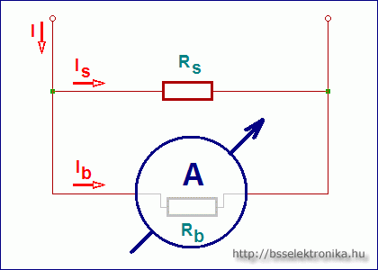

A sönt ellenállás egy párhuzamosan kapcsolt ellenállást jelent. Ez egy
"mellék utat" ad, a főágban folyó áram egy részének.
Egy hasonlat: egy városon keresztül vezető út forgalmát úgy lehet legegyszerűbben lecsökkenteni,
ha építünk egy széles. gyorsforgalmú, elterelő utat a városon kívül. Ekkor a forgalom nagyrésze
erre terelődik át, mert itt sokkal gyorsabban, könyebben lehet haladni, így a járművek nagyrésze
inkább ezt választja.
Elektrotechnikában a leggyakoribb példa a műszerek méréshatárának kiterjesztése. Ha csak 0.1 A
áram folyhat át a műszeren, pedig a főágban 1 A áram folyik, akkor olyan "mellékágat", söntöt
kell csinálni, hogy 0.9 A azt válassza. Mikor lesz ez? Ha ott kilencszer "könnyebben" lehet
haladni.
Ampermérő söntellenállás számítás:

Három értéket kell megadni, a negyediket számolja a program.